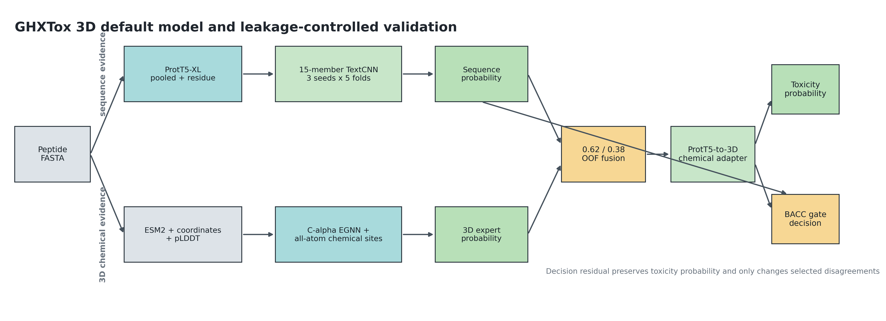
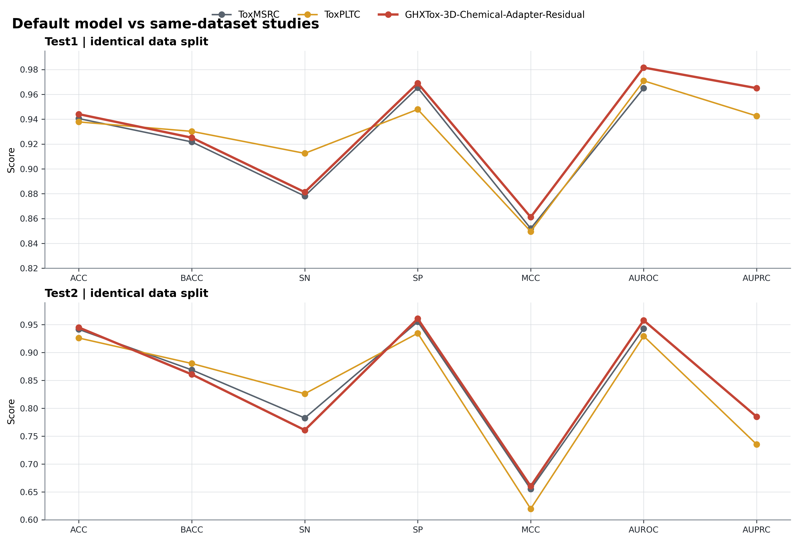
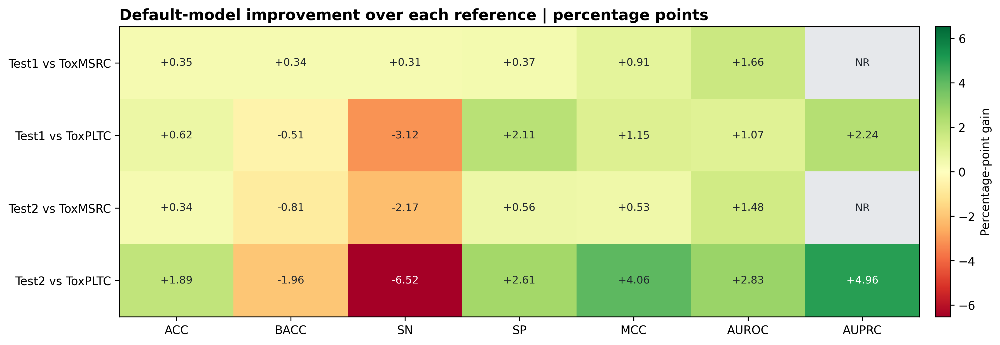
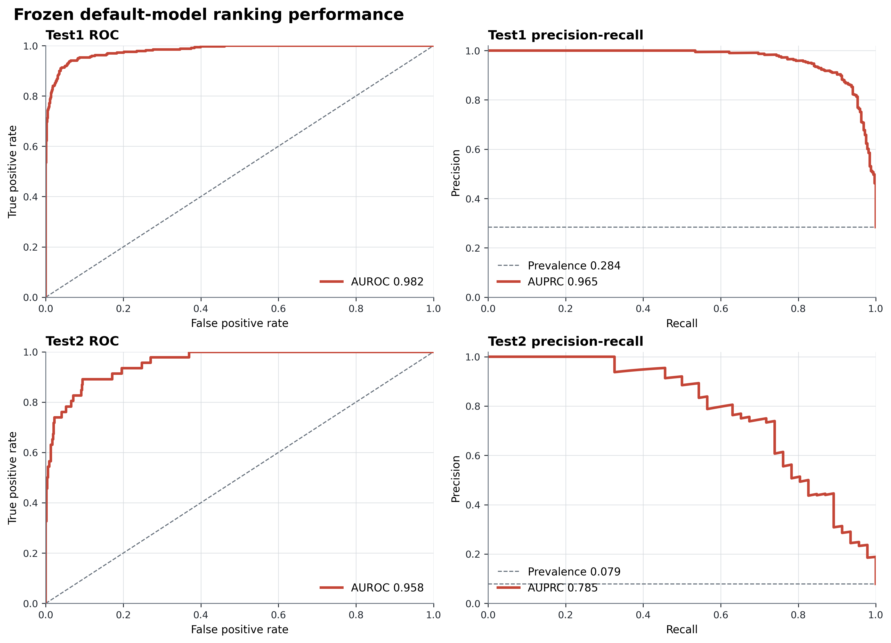
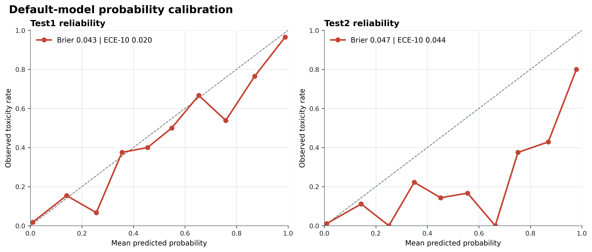
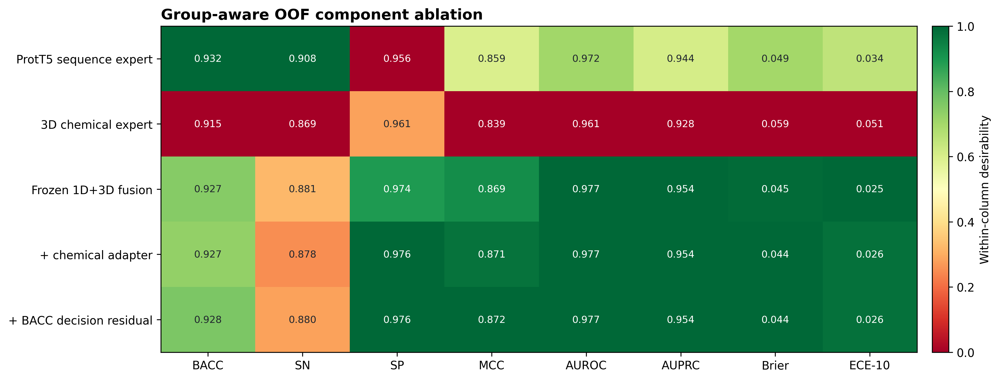

更新时间：2026-08-03
当前唯一公开默认模型：GHXTox-3D-Chemical-Adapter-Residual
本报告只使用当前项目默认模型在既有 Test1/Test2 数据上的真实预测文件，并与同数据划分的 ToxMSRC、ToxPLTC 论文结果比较。Test1/Test2 已被项目历史开发流程多次查看，因此这里应称为“冻结历史对照”，不能称为新的盲外部验证。
本轮将训练内 group-aware OOF 选出的轻量 BACC-prioritized disagreement-only residual 接入默认入口。它不重训 ProtT5 或 3D 主干，不改变 toxicity_probability，只在 ProtT5 教师和原联合模型对阈值侧别不一致、且 gate 置信度超过冻结阈值时修改最终 prediction。
核心结果：
| 数据集 | ACC | BACC | SN | SP | MCC | AUROC | AUPRC | Brier | ECE-10 |
|---|---|---|---|---|---|---|---|---|---|
| Test1 | 0.9440 | 0.9251 | 0.8813 | 0.9690 | 0.8611 | 0.9816 | 0.9650 | 0.0432 | 0.0200 |
| Test2 | 0.9450 | 0.8608 | 0.7609 | 0.9608 | 0.6603 | 0.9578 | 0.7849 | 0.0473 | 0.0438 |
相对未加残差的冻结联合模型，Test2 的 BACC +0.01087、SN +0.02174、MCC +0.01471，ACC +0.00172；Test1 的最终决策指标不变。排序与概率可靠性指标完全不变，这是该模块的设计约束，不是遗漏：AUROC/AUPRC/Brier/ECE-10 仍由原始联合概率计算。

图 1. 默认模型由 15 成员 ProtT5 序列专家、pLDDT 感知全原子 3D 专家、冻结 0.62/0.38 融合、ProtT5-to-3D 交互适配器和最后一级 BACC 决策残差组成。
0.62/0.38 凸组合，阈值为 0.60。[16] MLP，只处理序列教师与联合模型分歧样本。它保存为 deployable_gate.json，推理阶段用 NumPy 前向计算，不依赖测试标签。最终概率和最终决策是两个明确对象：
base_probability -> interaction adapter -> toxicity_probability
-> BACC gate -> prediction
因此该残差头能提高固定阈值下的 BACC/SN/MCC，同时不会伪装成概率排序或校准性能提升。

| 数据集 | 模型 | ACC | BACC | SN | SP | MCC | AUROC | AUPRC |
|---|---|---|---|---|---|---|---|---|
| Test1 | ToxMSRC | 0.9405 | 0.9217 | 0.8781 | 0.9653 | 0.8520 | 0.9650 | NR |
| Test1 | ToxPLTC | 0.9378 | 0.9302 | 0.9125 | 0.9479 | 0.8496 | 0.9709 | 0.9426 |
| Test1 | GHXTox 默认 | 0.9440 | 0.9251 | 0.8813 | 0.9690 | 0.8611 | 0.9816 | 0.9650 |
| Test2 | ToxMSRC | 0.9416 | 0.8689 | 0.7826 | 0.9552 | 0.6550 | 0.9430 | NR |
| Test2 | ToxPLTC | 0.9261 | 0.8804 | 0.8261 | 0.9347 | 0.6197 | 0.9295 | 0.7353 |
| Test2 | GHXTox 默认 | 0.9450 | 0.8608 | 0.7609 | 0.9608 | 0.6603 | 0.9578 | 0.7849 |
Test1 上默认模型超过 ToxMSRC 的 ACC/BACC/SN/SP/MCC/AUROC，超过 ToxPLTC 的 ACC/SP/MCC/AUROC/AUPRC，但 ToxPLTC 的 BACC/SN 更高。Test2 上默认模型超过 ToxMSRC 的 ACC/SP/MCC/AUROC，超过 ToxPLTC 的 ACC/SP/MCC/AUROC/AUPRC，但 ToxPLTC 的 BACC/SN 更高。不能写成“所有指标全面超过所有论文”。

残差候选已通过预先冻结的非退化门并接入公开默认。模型结构和 gate threshold 只在训练 OOF 上选择：
| 项目 | 冻结值 |
|---|---|
| teacher threshold | 0.45 |
| base threshold | 0.60 |
| MLP hidden layers | [16] |
| training epochs | 80 |
| alpha | 0.01 |
| gate threshold | 0.9298851979999941 |
| OOF selection | group-aware training-only OOF |
OOF 中参考模型为 BACC 0.927181 / MCC 0.871184，加入残差后为 BACC 0.927731 / MCC 0.871982，净纠正 2 个样本。Test1 改变 2 个决策，1 个纠正、1 个回退，净效果为 0；Test2 改变 1 个决策且纠正 1 个假阴性。Test2 只有 46 个阳性样本，因此单个样本即可使 BACC 改变约 1.09 个百分点，必须结合置信区间谨慎解读。
默认模型的类别分层 bootstrap 95% 区间如下。该区间量化当前默认自身的抽样不确定性，不是与参考论文的配对显著性检验。
| 数据集 | BACC | SN | MCC | AUPRC |
|---|---|---|---|---|
| Test1 | 0.9251 [0.9061, 0.9429] | 0.8813 [0.8438, 0.9156] | 0.8611 [0.8279, 0.8923] | 0.9650 [0.9521, 0.9763] |
| Test2 | 0.8608 [0.7956, 0.9199] | 0.7609 [0.6304, 0.8696] | 0.6603 [0.5523, 0.7640] | 0.7849 [0.6816, 0.8779] |


导师汇报中的消融只保留训练内 OOF 结果和当前默认组成证据：

| OOF 设置 | ACC | BACC | SN | SP | MCC | AUROC | AUPRC | Brier | ECE-10 |
|---|---|---|---|---|---|---|---|---|---|
| ProtT5 sequence expert | 0.9421 | 0.9317 | 0.9076 | 0.9558 | 0.8586 | 0.9724 | 0.9436 | 0.0489 | 0.0344 |
| 3D chemical expert | 0.9350 | 0.9150 | 0.8685 | 0.9615 | 0.8390 | 0.9607 | 0.9282 | 0.0594 | 0.0511 |
| Frozen 1D+3D fusion | 0.9474 | 0.9275 | 0.8812 | 0.9737 | 0.8693 | 0.9773 | 0.9536 | 0.0447 | 0.0254 |
| + chemical adapter | 0.9482 | 0.9272 | 0.8784 | 0.9759 | 0.8712 | 0.9773 | 0.9536 | 0.0445 | 0.0260 |
| + BACC decision residual | 0.9485 | 0.9277 | 0.8795 | 0.9759 | 0.8720 | 0.9773 | 0.9536 | 0.0445 | 0.0260 |
图 5 展示的是默认组成链，而不是从多个历史候选中拼接最佳单项指标。序列和3D两行是独立专家；后三行依次对应冻结联合、化学适配和最终决策残差。
[16] 模型；其他更深或更久训练候选没有因微小 OOF 差异进入默认。这些是工程和方法学创新组合，不应表述为 ProtT5、EGNN、TextCNN、Borderline-SMOTE 或 cross-attention 的单独原创发明。
导师汇报口径下，默认模型的创新按"架构级 / 方法验证级"两层列出，每条附训练内 OOF 或冻结历史证据：
架构级创新（已进入默认模型）
三维多尺度信息扫描提取：三维结构专家并非单一几何模块，而是按五个信息尺度对预测结构分层扫描提取，并以 pLDDT 置信度贯穿加权：
| 尺度 | 提取内容 | 进入默认 |
|---|---|---|
| 1. 残基尺度 | 氨基酸/官能团类别嵌入（12D）、42 维显式理化描述符、ESM2-650M 上下文残基向量（1280D→128D，PLM 增强） | ✅ |
| 2. 原子/化学位点尺度 | 全原子 PDB 拆分化学位点：每残基最多 2 个、8 类可重叠属性（正/负电、供体/受体、芳香、疏水、含硫、构象约束）；Tyr/Trp 双位点；键方向/平面法向旋转不变量 | ✅ |
| 3. 空间邻域尺度 | 16 维 Cα 几何描述符 + 混合图（序列相邻边 + 空间 top-10 近邻边）+ 双尺度距离编码：0–16 Å 原始距离 RBF 与 0–4 回转半径归一化 RBF 并行，绝对与相对尺度互补 | ✅ |
| 4. 肽级全局尺度 | 5 维全局特征（长度、净电荷、芳香族比例、Cys 比例、平均疏水性）+ 全局结构门控（平均/最小 pLDDT、低置信比例）+ 12 维旋转不变官能团摘要 | ✅ |
| 5. 构象集合尺度 | 跨构象接触占有率（6/8/10 Å）、残基 RMSF、距离方差、RMSD、回转半径，以 conformer_available 硬掩码接入；无构象样本严格回退单结构 3D-v2 |
✅（PepFlow pilot250 权重） |
pLDDT 感知贯穿尺度 3–5：进入 EGNN 边消息权重、残基级门控、整肽级全局门控，并对低置信坐标施加更强扰动。支撑证据：化学位点支路（尺度 2+3）Pareto 五折 MCC/AUPRC 均 5/5 折正向（+0.0030/+0.0013）；构象统计残差（尺度 5）pilot 固定阈值 MCC +0.056、AF2 16–30 aa 覆盖队列 MCC +0.032；31–50 aa BioEmu 边界逐构象图长肽段 MCC +0.053，但正样本净纠错为负，确认构象证据是"保守化/校准工具"而非正类决策升级手段。
全原子化学位点—方向—连续双尺度相互作用残差：每残基最多 2 个可重叠化学位点（8 类属性）、Tyr/Trp 双位点、键方向/平面法向不变量、原始 Å 与回转半径归一化双尺度 RBF，以零初始化残差并入 Cα-EGNN；Pareto 五折 MCC/AUPRC 均 5/5 折正向（平均 +0.0030/+0.0013）。
pLDDT 感知的多层级质量门控：结构置信度进入 EGNN 边权、残基级门控、整肽级全局门控与坐标扰动；对照实验显示"只用高 pLDDT 硬筛选训练"反而降至 MCC 0.7232/0.5593，故采用连续降权。
ProtT5→3D 逐残基化学交互适配器：以 ProtT5 逐残基 token 为 Query、pLDDT 加权 3D 状态与化学位点摘要为 Key/Value，零初始化有界 logit 残差建模"序列语义↔空间化学"条件关联；OOF MCC 0.86935→0.87118，Brier 同步改善。
构象集合证据（单结构→跨构象统计）：将接触占有率、RMSF、距离方差、RMSD、回转半径编码为 conformer_available 硬掩码残差；250 条分层 pilot 固定阈值 MCC +0.056；无构象样本严格逐位回退。
BACC-prioritized disagreement-only 决策残差：概率与决策解耦——只修改 prediction、不改 toxicity_probability；Test2 BACC +0.0109、SN +0.0217，可部署 artifact（NumPy 推理）。
能力感知显式回退链：完整 3D 化学缓存 → 冻结 0.62/0.38 融合 → 纯 ProtT5，缺失结构时公开入口显式报错而非静默降级出结果。
方法验证级创新（支撑可信度）
边界：以上是工程与方法学组合创新，不声称重新发明 ESM2/EGNN/TextCNN/cross-attention；默认模型是"综合指标最优"而非"所有指标全面最优"（纯 ProtT5 序列对照的 BACC/SN 更高）；候选实验（如逐构象图、BioEmu 边界）按协议保留为结构证据，不混入默认能力；五级尺度描述的是模型读取的结构统计关联，不等价于已观测的氢键、盐桥、膜插入或热力学构象，构象集合来自生成器采样而非平衡态或实验构象。
默认配置：configs/default_3d_hybrid.json
默认入口：src/ghxtox/hybrid_default.py
残差筛选与 artifact：src/ghxtox/bacc_recall_residual.py、runs/bacc_prioritized_decision_residual/deployable_gate.json
重新生成默认 Test2：
$env:PYTHONPATH = "src"
python -m ghxtox.hybrid_default `
--processed data/processed/test2_chemical_sites_final_esm2.pt `
--prott5-features data/processed/test2_prott5_official_mean.pt `
--adapter-feature-cache data/processed/test2_prott5_structure_adapter.pt `
--output runs/default_3d_hybrid/test2_predictions.csv `
--metrics runs/default_3d_hybrid/test2_metrics.json
重新生成图表和机器可读表：
python -m ghxtox.mentor_report `
--bootstrap-iterations 5000 `
--bootstrap-seed 20260802 `
--output-dir reports/mentor_report
关键审计文件：
runs/default_3d_hybrid/test1_predictions.csvruns/default_3d_hybrid/test2_predictions.csvruns/default_3d_hybrid/test1_metrics.jsonruns/default_3d_hybrid/test2_metrics.jsonreports/mentor_report/core_metrics_default_only.csvreports/mentor_report/default_bootstrap_ci.csvreports/mentor_report/paper_deltas.csvreports/mentor_report/mentor_summary.jsonreports/mentor_report/reproducibility_manifest.jsonTest2 阳性样本少，BACC/SN/MCC 的点估计对单个样本敏感；Test1/Test2 不是新独立盲外部集；论文只报告公开可复核的点估计和 bootstrap 区间，不把未报告的论文指标补成数值；生物学解释仍是模型信号解释，不等价于实验因果机制。